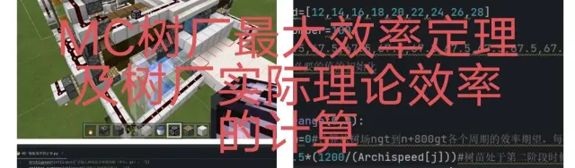

主页
树场
本栏目共 10 篇技术性图文。树苗生长机制、催熟策略与树场效率计算。点击任意一篇即可阅读全文，配图均已本地化保存。
MCBE [水]部分树苗的生长机制
作者：账号已注销 · 2020年01月16日 01:29 · cv4361187
MC 巨型云杉树的生长机制以及最优催熟策略
作者：RSSMcRedRockRT · 编辑于 2023年10月13日 16:06 · cv27029335
树场全解析（活塞篇）
作者：angel丶抱 · 2024年10月01日 18:27 · cv39249382
树场全解析（发射器篇）
作者：angel丶抱 · 2024年10月02日 12:16 · cv39256219
树场全解析（更新顺序篇）
作者：angel丶抱 · 2024年10月02日 12:53 · cv39256634
树场全解析（实际运用：连推连拉篇）
作者：angel丶抱 · 2024年10月02日 13:04 · cv39256744
MCBE 预催熟 骨粉补充与骨粉矫正
作者：南下北伐诸侯 · 编辑于 2023年08月31日 03:29 · cv26110190
树厂速度计算文案
作者：狸mystery · 2024年07月30日 22:38 · cv36522613

MC 齐喷催熟树厂极限效率定理和树厂理论效率的计算
作者：RSSMcRedRockRT · 编辑于 2024年01月07日 09:04 · cv27781635
（终焉）MC大云杉生长机制及效率计算
作者：RSSMcRedRockRT · 编辑于 2024年03月25日 05:28 · cv33358140
 树场
树场
树场
树场
![MCBE [水]部分树苗的生长机制](../../assets/articles/covers/cv4361187.webp)